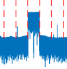

1. 什么是ACLR
ACLR，Adjacent Channel Leakage Ration，邻近信道泄漏比。

上图中用红色虚线把频域信号分成了五段，中间是主信道，与主信道相邻的就是邻信息。再边上一点是次邻信息。
ACLR是指某个邻信息与主信道之间的能量比值。4个邻信息，每个信道有一个对应的ACLR值。
以左边的邻信道为例：
ACLR(mw) = 邻信道功率(mw) / 主信道功率(mw)
但我们通常用dBm而不是W来表示功率，根据W和dBm的转换公式：
1dBm = 10log（功率值/1mw） 1mw = 10^(1dBm/10)
代入ACLR(mw)公式得：
也常用ACLR(dB)代替ACLR(mw)：
ACLR(dB) = adjacent channel power in dbm - adjacent channel power in dbm
2. 为什么要计算ACLR
ACLR可以反映主信道对邻近信道的影响。
主信道是可以用来通信的信道。而邻近信道有可能是别的厂家用于信道的信道，也有可能是自己厂家的另一个载波的信道。如果主信道对邻近信道的影响太大，那么别人或者另一个载波在使用邻近信道时通信质量就会受到影响。
因此需要一个标准来衡量主信道的通信是否会影响邻近信道的通信质量。
ACLR的含义为邻近信道功率与主信道功率的比值。可以反应主信道对邻近信道的影响。
另外一个相似的指标是EVM。指当邻近信道有载波的情况下，无法计算ACLR。这时通过计算邻近信道的EVM来判断邻近信道对主信道的影响。
3. ACLR是怎么计算的
- 把时域信号转成频域信号
- 求频域信号上每个点的功率
- 对积分带宽（载波带宽、主信道带宽）范围内的功率求积分
- 把积分功率换为dBm单位
- 对邻近信道带宽（与主信道带宽相同）范围内的功率求积分
- 把积分功率换为dBm单位
- 两个dBm结果相减